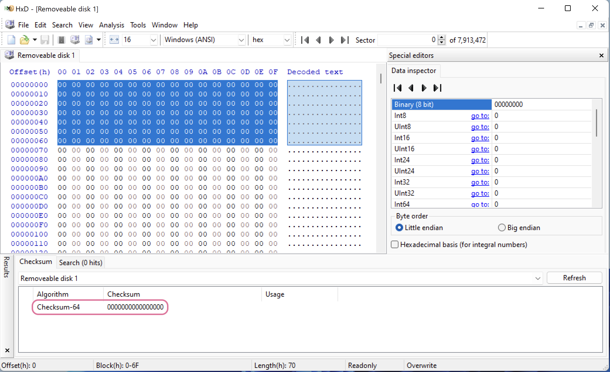
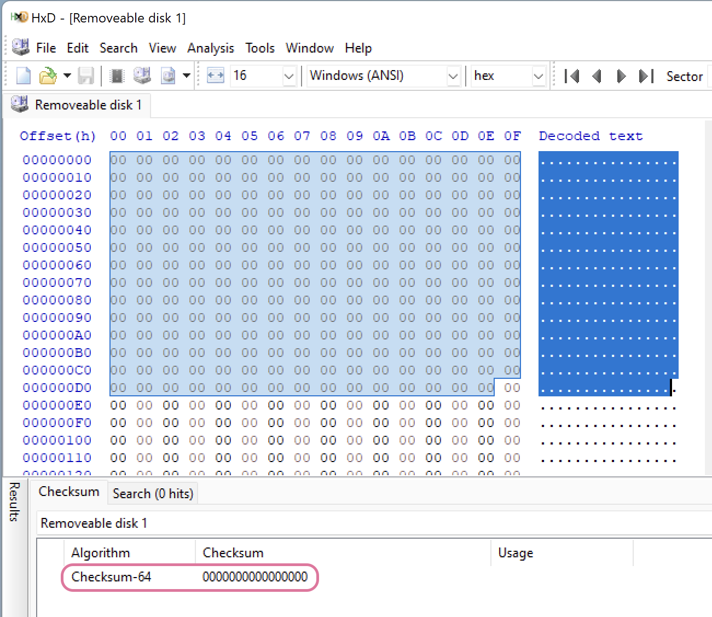
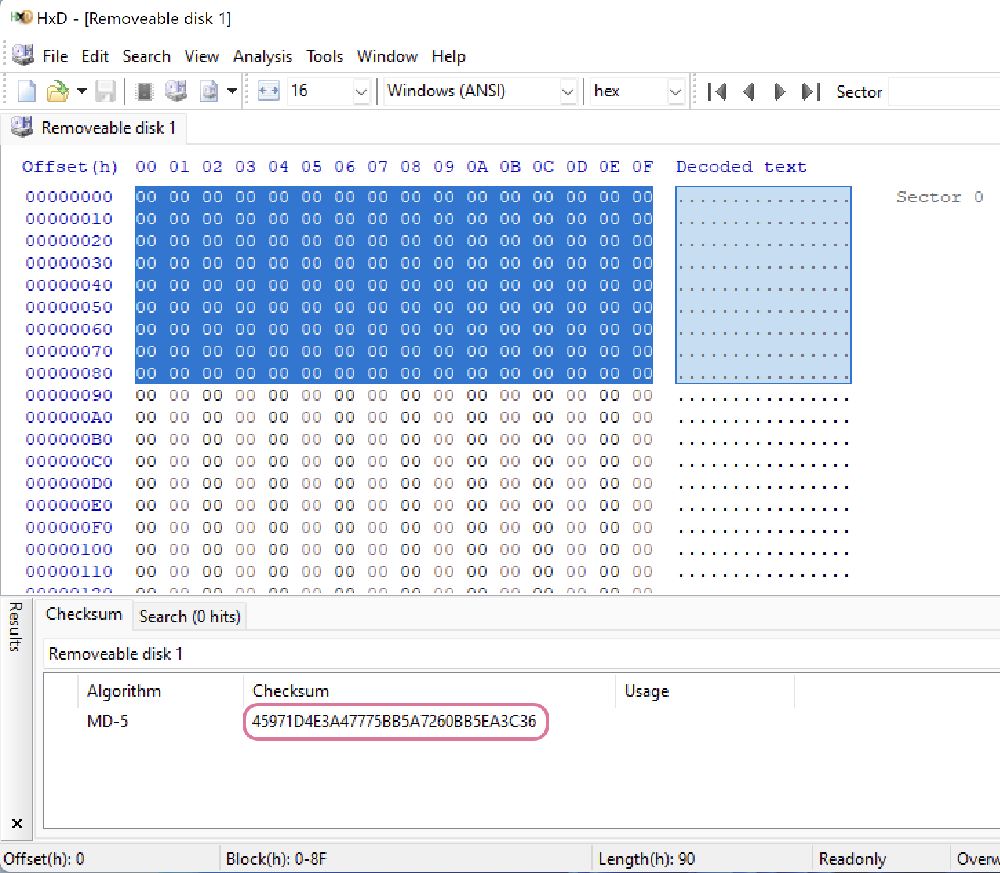
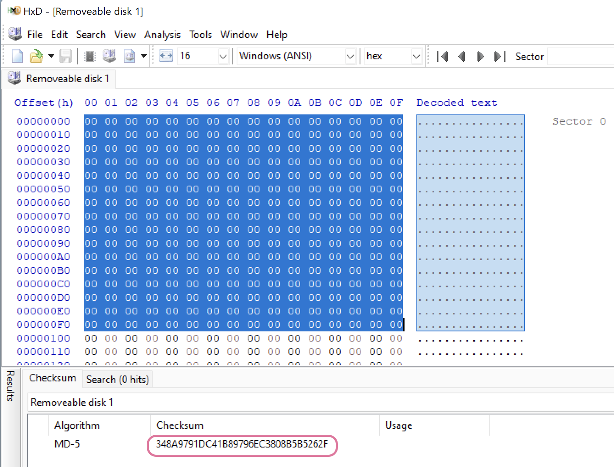

Before copying evidence or making a disk image, one needs to sterilise the target media to ensure that data on that disk before this operation would not meddle with the evidence data. Several rounds of writing 0s are usually enough.
Process
Keep in mind that flash drives and SSD work in different manners, and that’s why simple permanent deletion of a file might deem it to be unrecoverable. However, it’s not always the case (due to some optimisations implemented in the controller), that’s why for compliancy’s sake, you might still want to follow the below procedures.
KillDisk
On Windows/Linux/macOS, you can use a KillDisk utility to erase it (not wipe, since wipe clears the unused space only). The best practice is to use three-pass zeros, but it’s not included in freeware. You can still run the same command three times. On Mac you can also use diskutil zeroDisk or diskutil randomDisk. The first will fill the disk with 0 and the second - with random symbols.
diskutil list # to list all the attached and internal devices. Note the drive file name; it looks like /dev/disk[X], where X is a number. If you want to zero out just a volume instead of the whole physical drive, add the second identifier, for example, /dev/disk[X]s[Y], where X is the number of the physical drive and Y is the volume number within this disk.
diskutil zeroDisk /dev/disk4 # this might take a while. The larger the disk, the more time is required.
To verify that the disk was indeed sterilised on Windows, run Analysis -> Checksums -> Checksum 64 in HxD hex editor (with admin rights).
📝 Note that you can’t use any hash algorithm for this procedure. Checksum64 will be the same for 1, 2, 30, and 10000 zeros. However, the hash will be different for different sizes of input data.
For Checksum64, any input size will return the same output as soon as the data is repeated.
 Checksum for 0s, 1440 bytes selected. The result is the same, 0000000000000000.  Checksum for 0s, 3119 bytes selected. The result is 0000000000000000.
For MD5 hash, however, that is not the case. Note, that the selected areas are different in size and the resulting hash value is different as well.  MD5 hash for the selected 1920 bytes.  MD5 hash for the selected 3600 bytes. The value is different.
In case if you are exceptionally paranoid or have to be, and it’s an HDD, one additional step before zeroing out everything would be making the whole process better: overwriting the contents with random data (diskutil randomDisk). You might be interested in adding this step because there are technologies that allow extracting residual magnetic data from a disk.
😡 Once again, whenever I am trying to follow some instructions from the courses or books, there is something that goes wrong. This time is no exception. On opening the erased disk
HxDalerts “Insufficient rights even for administrator”. What the hell 😡? If I partition the drive, it becomes accessible, but it’s not WIPED!✍️ Looks like either the drive was very old (and it was), or it doesn’t work on partitions (logical drives). I’ve used a newer drive, and I erased the whole disk without making any partitions.
diskutil
diskutil, comes with macOS.
Tools
Methodology for testing
- Write several files to a drive.
- Run the tool once, user zeroing option (overwrite all with zeros).
- Use HxD for Windows to calculate the Checksum64 for the entire physical drive (should be all zeroes).
- Use HxD or Active@ DistEditor to see if there is some garbage left.
Active@ KillDisk
Last Tool check: 📆 17/07/2022:
- ✅ Windows
- Active@ KillDisk 10.2.8
- macOS Monterey 12.3.1 (21E258) - host.
- Parallels Desktop 17 for Mac, Windows 11 - guest
- ➖ Active@ KillDisk for macOS, Freeware, Version 14.0.
diskutil
Last Tool check: 📆 17/07/2022:
- ✅ macOS Monterey 12.3.1 (21E258)
- tool version unknown.
After 1 round of diskutik zeroDisk has all 0 Checksum64; therefore, the cleanup works as expected for 1 round (flash drive).
References
[1] Standard DoD 5220.22-M, US DoD 5220.22-M (ECE) [2] NIST 800-88 VS DoD 5220.22-M [3] What is the DoD Standard (DoD 5220.22-M)?